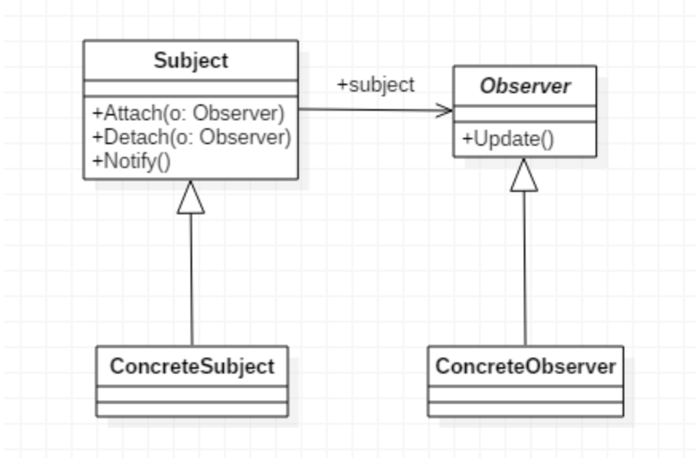

写在前面
本文仅仅是作者学习C++过程中，选择实现观察者模式作为练习的思考过程，可能包含事实错误，若发现问题欢迎提出
介绍
先简单介绍下观察者模式
众所周知（
观察者模式是一种行为型设计模式，它定义了一种一对多的依赖关系，当一个对象的状态发生改变时，其所有依赖者都会收到通知并自动更新。
当对象间存在一对多关系时，则使用观察者模式（Observer Pattern）。比如，当一个对象被修改时，则会自动通知依赖它的对象。观察者模式属于行为型模式。
——菜鸟教程
看文字描述非常无力，再借用下最简化的观察者模式 UML 类图

我们可以观察到，这种模式可以看作包装了一种动态调用多种不同函数的办法
具体实现是通过Observer接口的update方法，利用多态特性做到参数一致，处理过程不同。Subject再保存各种不同实现了Observer接口的实例，在适当实际调用它们的update方法，就达到了事件分发的效果
在Java中照着UML类图写就可以实现这种模式，C#中更是在语法层面上就加上了event这种关键字来方便实现。C++当然也可以照着UML类图用虚函数去实现
实现
但是，但是，这可是C++，设计宗旨/哲学（？）里有一条叫做零开销抽大象原则（Zero Overhead Principle），为了这么个小功能就要动用虚函数这种重量级特性吗（可能并不重量级
先思考下为啥一般在Jvav里大家都在用接口实现这种模式原因。嗯…函数，Jvav取不到啊，函数在Jvav里不能算一等公民（沃兹机说的），lambda表达式都要函数式接口的支持。隔壁C#就可以，在托管世界里有Delegate，非托管世界更是和C/C++长得差不多
那事情就简单很多了，我们只需要将函数存下来，在适当的时机调用，观察者模式就完成了。C++11还很贴心的提供了std::function来包装。
不能比较的std::function
根据上文思路，容易写出：
1
2
3
4
5
6
7
8
| class MultiDelegate {
public:
void Add(std::function<void(int)> delegate) {
_list.emplace_back(delegate);
}
private:
std::vector<std::function<void(int)>> _list;
};
|
但是当我想实现Remove时，遇到了第一个问题：std::function没有重载==运算符，没有实现比较两个对象是否相等。准确来说，只实现了与nullptr的比较
为什么不能比较两个std::function是否相等？
我在stackoverflow上找到了一些回答：
总结一下，原来，C++中除了函数可以调用，还有函数对象（Function Object），它们都属于可调用（Callable）
std::function能储存任何可复制构造（Copy Constructible）的可调用目标，包括函数（通过其指针）、 lambda表达式、 bind表达式等等。
而在具体实现std::function时，它会擦除底层可调用目标的信息（个人认为这也是多态的一种实现方法），这让比较变得不可能了。
直接比较走不通了，还可以曲线救国，通过引入额外的标识符来比较。最容易想到的就是利用字符串，也可以使用指针
欸，但是别急，还有些其他问题没处理
难以避免的泄漏
在其他语言中使用观察者模式，需要开发者注意Observer的添加和释放时机，个人在学习工作中就不止一次忘记…
C++有一种习惯用法叫做RAII（Resource acquisition is initialization），资源的获取与释放跟随对象的构造和析构一起执行，可以保证资源和对象拥有一样的生命周期，因此，对象没有泄漏，资源也不会泄漏。
如果将Observer看作一种资源，就正好可以套用RAII的思想。因此，需要一个编写一个包装类。
以下为伪代码，只演示大致思路：
1
2
3
4
5
6
7
8
9
10
11
12
13
| class MultiDelegate {
public:
void Add(Delegate* d);
void Remove(Delegate* d);
};
class Delegate {
public:
Delegate(std::function<void(int)> f, MultiDelegate* d) : f(f), d(d) { d->Add(this); }
~Delegate() { d->Remove(this); }
private:
std::function<void(int)> f;
MultiDelegate* d;
};
|
那资源泄漏真的解决了吗？好像是的，但引入了更加麻烦的新问题：
- 要是
MultiDelegate的生命周期比Delegate短怎么办？
- 要是
std::function捕获的闭包内有生命周期比Delegate短的对象怎么办？
别笑，一切皆有可能发生（
第一点想想办法，还是能解决的。第二点在这里无法避免，因为Delegate只关注抽象观察者，具体观察者的安全只能由开发者保证。
C++提供的std::shared_ptr和std::weak_ptr组合用来安全的管理对象生命周期，std::weak_ptr用来获取std::shared_ptr的临时所有权，它做的事情就是跟踪监视对象，如果对象生命周期结束，就无法成功拿到所有权
根据这个特点，我们可以让发布者储存委托的弱引用，让委托储存发布者的弱引用，这样就算其中一方失效，也不会造成循环引用和泄漏
可以写出代码
1
2
3
4
5
6
7
8
9
10
11
12
13
14
15
16
17
18
19
20
21
22
23
24
25
26
27
28
29
30
31
32
33
34
35
36
37
38
39
40
41
42
43
44
45
46
47
48
49
50
51
52
53
54
55
56
57
58
59
60
61
62
63
64
65
66
67
68
| class MultiDelegate;
class DelegateHandle {
public:
DelegateHandle() noexcept = default;
DelegateHandle(std::function<void(int)>&& func, std::shared_ptr<MultiDelegate> md) noexcept
: _func(std::make_shared<std::function<void(int)>>(std::move(func))),
_md(std::weak_ptr<MultiDelegate<void(int)>>{md}) {
md->Add(_func);
}
DelegateHandle(const DelegateHandle& other) noexcept = default;
DelegateHandle(DelegateHandle&& other) noexcept {
if (other.IsEmpty()) {
Destroy();
}
_func = std::move(other._func);
_md = std::move(other._md);
}
DelegateHandle& operator=(const DelegateHandle& other) noexcept = default;
DelegateHandle& operator=(DelegateHandle&& other) noexcept {
if (other.IsEmpty()) {
Destroy();
}
_func = std::move(other._func);
_md = std::move(other._md);
return *this;
}
~DelegateHandle() noexcept {
Destroy();
}
bool IsEmpty() const noexcept {
return !_func && _md.expired();
}
void Destroy() noexcept {
if (!_md.expired() && _func.use_count() == 1) {
auto md = _md.lock();
md->Remove(_func);
}
_func.reset();
_md.reset();
}
private:
std::shared_ptr<std::function<void(int)>> _func;
std::weak_ptr<MultiDelegate> _md;
};
class MultiDelegate {
public:
void Add(const std::shared_ptr<std::function<void(int)>>& data) noexcept {
_list.emplace_back(std::weak_ptr<std::function<void(int)>>{data});
}
void Remove(const std::shared_ptr<std::function<void(int)>>& data) noexcept {
_list.erase(std::remove_if(_list.begin(), _list.end(), [&](auto&& t) { return t.lock() == data; }), _list.end());
}
void Invoke(int arg) {
std::vector<std::weak_ptr<std::function<void(int)>>> temp{_list.begin(), _list.end()};
for (auto&& i : temp) {
std::shared_ptr<std::function<void(int)>> t = i.lock();
t->operator()(arg);
}
}
void operator()(int arg) { return Invoke(arg); }
private:
std::vector<std::weak_ptr<std::function<void(int)>>> _list;
};
|
这里我们还允许DelegateHandle复制构造和移动构造，应对一些可能出现的需求（真的有可能吗
函数对象类型
虽然已经保证了一定程度上的内存安全，但目前委托只能接受函数对象（FunctionObject）类型为void(int)
幸运的是，模板可以帮助我们创建可接受任意函数对象类型的委托
1
2
3
4
5
6
7
8
9
| template <typename T>
class DelegateHandle;
template <typename... Args>
class DelegateHandle<void(Args...)> {
private:
std::shared_ptr<std::function<void(Args...)>> _func;
};
|
这里运用了类模板特化，特化的类型是返回值为void，参数为可变参数模板的函数对象，特化的这个类它本身也是个模板类…因为后面我们需要拿到函数对象输入参数的类型
为啥返回值限制为void呢，啊这，哪有观察者还能返回值给发布者用的（不排除没有，但想不到有啥用
发布者也是同理
1
2
3
4
5
6
7
8
| template <typename T>
class MultiDelegate;
template <typename... Args>
class MultiDelegate<void(Args...)> {
private:
std::vector<std::weak_ptr<std::function<void(Args...)>>> _list;
};
|
但是发布者的实际调用函数应该怎么写呢
目前我得出的结果是
1
2
3
4
5
6
7
8
9
10
11
12
| template <typename... Args>
class MultiDelegate<void(Args...)> {
void Invoke(Args&&... args) {
std::vector<std::weak_ptr<DataType>> temp{_list.begin(), _list.end()};
for (auto&& i : temp) {
std::shared_ptr<DataType> t = i.lock();
t->operator()(std::forward<Args>(args)...);
}
}
};
|
首先要明确值类别（value categories）：每个C++表达式都可以划分为三种基本值类别：纯右值 (prvalue)、亡值 (xvalue)、左值 (lvalue)。值类别不是类型（type）
其次，C++11新增了一条针对引用类型的规则，叫做引用折叠（reference collapsing）
Reference collapsing
这条规则允许在模板或 typedef 中的类型操作可以构成引用的引用。且右值引用的右值引用折叠成右值引用，所有其他组合均折叠成左值引用
C++11新增的右值引用在模板语境下成为转发引用（forwarding references），或者叫万能引用，它保持函数实参的值类别
引用折叠加完美转发可以得出一些规则（例如模板参数为T，传入）：
- 传参值类别为左值，类型为int，类型推导为int&，模板参数推导为左值引用int&
- 传参值类别为右值，类型为int，类型推导为int，模板参数推导为右值引用int&&
因为右值引用的值类别为左值，因此想要将它原本的值类别继续传递给另一个函数，需要转发std::forward
Forwarding references
cppreference对此有非常详细的解释
末尾
完整实现可以看代码
multi_delegate.h
总之，其他语言里很容易实现甚至语言内置的东西在C++里可真是复杂…
目前这套简单的机制已经可以很好的工作了，以后要是遇到问题再说吧
多线程安全？醒醒，哪来那么多多线程安全的需求（不是